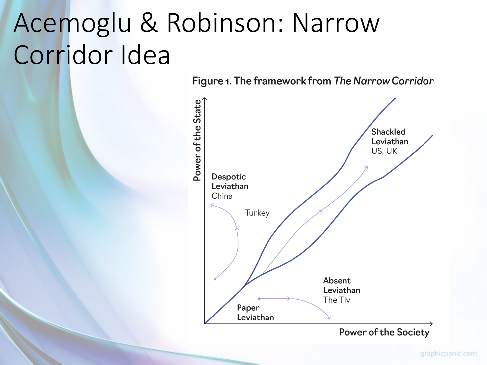
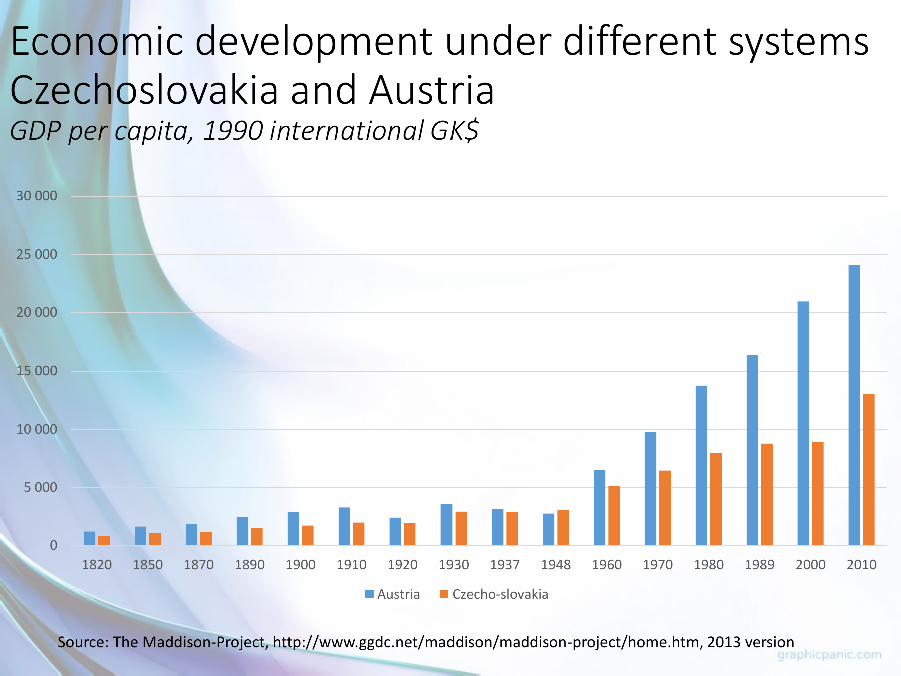

Explain institutional persistence and political feedback without determinism
Explanation, worked examples and practice
Useful first: Classify economic systems across distinct dimensions, Discriminate cooperation and coordination through best responses
Outcome and conditions
Given a reform or persistence vignette, distinguish a rule’s present function from its historical origin, trace collective-action/coordination and beneficiary barriers, interpret the lecture’s power-feedback and Narrow Corridor diagrams qualitatively, and explain path dependence without inevitable historical sequences.
Study conditions, assessment scope and sources
Essential criterion components are C1 persistence mechanisms, C2 function versus origin, C3 power-feedback and corridor, C4 path dependence and inference limits. Primary finished-note locations: Why imperfect institutions can persist; Systems change, and institutions feed back on themselves.
Instruction and supported practice may use the selected notes. Independent checks are closed-note: show the stated prompt and its supplied data only, with no explanation, model answer, hints, web search, other people, AI help, or solution-bearing figure access before the response. A simple calculator is allowed for arithmetic after the learner states the reasoning; no symbolic or generative tools. If notes, item keys, or matching solutions were accessed, record the exposure and do not call that attempt independent. No timing or confidence threshold replaces a complete answer. No quantitative state-power scale, transition probability, universal origin theory or unsupported empirical causal estimate is assessable. Short corrections cannot replace full diagram/persistence checks.
Prerequisites and checks
Check the prerequisites
O001 provides independent dimensions and O005 supplies collective-action/coordination barriers. O006-P1 / 1: “In a stag hunt, can everyone benefit from a new joint pattern yet stay at the old equilibrium? Why?” Key yes, a lone switch can be worse and expectations about others matter. Pass requires conditional best response; partial merely yes; fail says joint benefit ensures immediate switch. Repair O005 explanation/S1. O006-P2 / 1: “Does private ownership identify who can legally remove rulers?” Key no, political rules are separate; repair O001 if missed. Both can be skipped with committed corresponding acquisition.
For every P diagnostic, ask before exposing its key. Pass requires all explicitly requested distinctions and their reasons; partial means a correct part with an omission or local arithmetic slip; fail means the essential prerequisite mechanism is contradicted. Unknown help or no answer is unscorable. Diagnostics are brief route selection only and never acquisition evidence. Apply the named repair once, then instruction rather than repeat-testing.
Motivation, intuition, and definitions
Useful institutional function does not establish the cause of origin: Roland calls that inference the functionalist fallacy. Inefficiency need not disappear because reform requires organized costly action and may threaten beneficiaries. Collective-action/free-riding, inhibited association and coordination on low trust can obstruct change. Path dependence means earlier arrangements shape later resources, power and expectations, not that history is immutable. Survivorship bias arises when surviving traditional societies are treated as the original form of all such societies. The lecture’s feedback model distinguishes de jure legally assigned power from de facto effective power rooted partly in resources. The Narrow Corridor uses state power vertical and society power horizontal; it is qualitative and belongs to the lecture, not the uploaded Why Nations Fail chapter.
Explanation steps
- Explain what a rule does now, then ask a distinct historical question about why it arose. The ability to lower transaction costs is neither proof of intentional efficient design nor proof it will appear automatically.
- Identify who would gain from reform, who bears participation/switching costs and who loses privilege. A low-trust pattern can be individually stable even with a better joint pattern; beneficiaries may impede organization.
- Read feedback in time order: today’s political institutions shape de jure power; resource distribution shapes de facto power; both shape today’s economic institutions and tomorrow’s political institutions. Economic institutions affect performance and next resource distribution, which influences later effective power. Arrows are proposed mechanisms/endogeneity, not coefficients or identities.
- Read corridor qualitatively: constrained state capacity with organized society is Shackled Leviathan; dominant state is Despotic; weak state is Absent; weak-both is Paper. These illustrative labels/country placements have no measured coordinate or inevitable country route.
- Explain why transition may be imposed or have no clear start decision/date, why China/Russia examples differ, and why political control can sustain an economically poor arrangement. Earlier arrangements constrain options but reform/conflict remains possible. Thinkers Veblen/Commons/Coase/Williamson/North/Olson are conceptual connections in Roland, not six independent empirical tests. No scholar-name recall criterion is added.
Read the full explanation
Reading context
Deliver these complete reused passages before the worked example; earlier concise prompts are checkpoints, not substitutes. Necessary prerequisites use the complete prepared lessons specified above.
Source passage
Origin: reused complete checked passage Why imperfect institutions can persist; fingerprint ad6b2563b63aec9f5d51f12a6c628859bde634c2452e0f90c2fac1f939f0b79f. Heading depth and required relative figure-path relocation alone are adapted.
Why imperfect institutions can persist
It would be a mistake to conclude that, because an institution could reduce a transaction cost, it will automatically appear wherever that problem exists. Roland calls the inference from a thing's present function to the cause of its origin the functionalist fallacy. His microwave example makes the logic clear: an invention's later use need not have been its designer's original aim. Similarly, political settlers seeking protection from tyranny may create rules that later support commerce, even if promoting growth was not their stated purpose. Knowing how a rule works and knowing why it arose are separate questions. Roland, PDF p. 24 (printed p. 198), Roland, PDF p. 25 (printed p. 199)
Inefficient institutions can last because replacing them requires people to organize, bear costs and overcome those who benefit from the existing arrangement. Weak courts, insecure property rights and restrictions on association can themselves make reform harder. Coordination creates an additional hurdle: each person may wait for others to adopt a better pattern before changing their own behaviour. Thus observing a bad rule does not prove no better rule is possible, and observing a useful rule does not prove it arose because it was efficient. The chapter particularly emphasizes collective-action barriers and imperfect democracy; it does not supply a universal account of every institution's history. Roland, PDF p. 22 (printed p. 196), Roland, PDF p. 24 (printed p. 198), Roland, PDF p. 25 (printed p. 199)
The chapter locates this argument in an institutionalist tradition. Veblen stressed status-motivated consumption and social norms; Commons treated transactions and legal rules as central; Coase examined transaction costs, the firm and property rights; Williamson developed asset specificity and hold-up; North emphasized long-run property-rights institutions; and Olson explained free riding in collective action. These are conceptual connections supplied by Roland, not six independent empirical tests in this chapter. Roland, PDF p. 25 (printed p. 199), Roland, PDF p. 26 (printed p. 200)
Source passage
Origin: reused complete checked passage Systems change, and institutions feed back on themselves; fingerprint 8764485b6a043a0bcf7003eea29bf86eaa00b3cb42d43f2fde4d15cb696a2778. Heading depth and required relative figure-path relocation alone are adapted.
Systems change, and institutions feed back on themselves
The lecture rejects a single inevitable route from tradition to feudalism to capitalism or from central planning to one market model. It uses China and Russia to illustrate different, politically shaped transition paths toward forms it calls state capitalism. Path dependence means that earlier arrangements alter the resources, expectations, and power of later decision makers; a reform starts from that inherited position. A related survivorship bias arises if we infer the original form of all traditional societies only from those that still survive. A system change may lack a deliberate starting decision or a clear start date; where there was a decision, the new system could have been imposed rather than voluntarily chosen, as with Soviet-bloc central planning. The design and survival of a system can also serve political goals, so political control can help stabilize it even when its economic results are poor for much of the population. These are interpretive claims from the slides, not proof that one historical path is universal. Week I lecture, PDF slides 31–36

The lecture's Narrow Corridor schematic places state power vertically and society's power horizontally. It labels a corridor where state capacity is constrained by organized society as the Shackled Leviathan; outside it are a Despotic Leviathan where state power dominates, an Absent Leviathan with weak state capacity, and a weak-both Paper Leviathan. The country labels are illustrative placements in a qualitative model, not measured coordinates or a necessary sequence of development. This visual connects political constraints to economic institutions; the course's uploaded Why Nations Fail chapter supplies a different historical argument, so one should not pretend that chapter itself contains this figure. Week I lecture, PDF slides 34–35

The lecture's Acemoglu–Robinson (2006) feedback diagram links today's political institutions to de jure (legally assigned) power, and today's distribution of resources to de facto (effective) power. Together those forms of power help shape today's economic institutions and tomorrow's political institutions. Economic institutions affect economic performance and the next resource distribution, which feeds back into later power. The arrows express a conceptual causal mechanism and endogeneity, not measured coefficients or algebraic identities. Week I lecture, PDF slides 43–44
Why a striking comparison may still mislead

Austria–Czechoslovakia comparison. The chart plots GDP per person in 1990 international Geary–Khamis dollars over 1820–2010 using the Maddison Project 2013 version. The visible gap later in the series motivates a question about divergent institutions and systems. It does not isolate a causal effect of socialism: war, borders, industrial structure, measurement, and other historical differences also require analysis. The slide retains a “Czecho-slovakia” series for 2000 and 2010, after the state's dissolution, without explaining how those observations were constructed. Read its units, source date, and this labeling limit before using it as evidence. Week I lecture, PDF slide 40

Germany measurement example. For 1950–1989, the slide reports West German GNP and GNP-per-person growth figures of \(4.2\) and \(3.6\), while its East German official NMP series reports \(5.6\) and 5.9. Two re-estimates of East German GNP using different 1989 Mark/DM conversions report \(1.6\)/\(1.9\) and \(-2.2\)/\(-1.9\) respectively. The table's labels do not print a unit for these rates, and NMP and GNP are different aggregates. The key lesson is sensitivity to accounting and conversion, not a precise uncontested ranking from unlike numbers. Week I lecture, PDF slide 41, table attributed there to Pohl (1991)
The lecture surveys geography, culture, and leaders' ignorance as proposed explanations of prosperity, then poses Nogales and other counterexamples to simple one-factor accounts. It argues that trust and cooperation can themselves be shaped by institutions. These examples show why competing explanations must be examined; they do not mean geography or culture never matters. The Nogales and colonial-history note explains the uploaded chapter's own evidence and its limits in detail. Week I lecture, PDF slides 37–43
Finally, the lecture's Lagos insecurity scenario, Adam Smith quotation, and China discussion all point to the same decision mechanism: if property claims, contract enforcement, or predictable treatment are doubtful, an investor has reason to protect or conceal resources, seek personal connections, or use shorter-horizon opportunities. The China slide specifically names inconsistent rules, weak independent judicial checks, and reliance on guanxi networks; those are lecturer claims for discussion, not a blanket characterization of every Chinese transaction. The uploaded Roland chapter explains the contracting problems behind that intuition. Week I lecture, PDF slides 46–52 Institutions and economic development

The lecture's final example is a screenshot of a September 2024 article describing a debated practice in which a relative's conviction can restrict access to certain public jobs, university programs, or military service. It illustrates an indirect effect of legal rules on people who were not convicted and why households may care about predictability and equal application. The screenshot reports nearly 25 million recorded offenders during 2000–2022 and states that some 100 million people could be at risk if each has three affected relatives. That multiplication gives about 75 million relative instances before any overlap; the article does not explain the difference. Neither number is an observed count of people actually penalized. The slide presents this as an article excerpt, not as independently verified course data. Week I lecture, PDF slide 52
Worked example
O006-W1
Item/version: O006-W1 / 1. Role: worked example. Components: C1 persistence mechanisms, C2 function versus origin, C3 power-feedback and corridor, C4 path dependence and inference limits.
Prompt: Hypothetical: an old licensing rule restricts entry; favored firms fund officials. Most citizens favor open entry but expect others to bear lobbying costs and fear being first. Explain persistence, origin/function distinction and both lecture diagrams; evaluate “all societies must progress along the same path.”
Prepared key and essential reasoning: Existing privilege creates concentrated beneficiaries and diffuse participation costs; expectations can keep reformers at a low-action pattern. A license may currently screen quality, but that function alone does not prove why it was created. Legal office rules define de jure power, wealthy firms supply de facto influence, together affecting entry rules and future politics; profits/resource distribution can reinforce influence. Corridor axes state/society power and four qualitative labels do not assign this country a measured location. Path dependence constrains reform without fixing it; transitions vary, may be imposed/no single start, and universal sequence is unsupported. The vignette is hypothetical mechanism, not an identified case.
Item decision: Pass requires every listed component in the key with no critical error. Partial means some valid reasoning but a missing essential component or a local slip; fail means the defining mechanism is wrong. Accept paraphrase and different examples only where explicitly allowed by the key.
Practice with fading assistance
Write your reasoning, then reveal the complete key to check each step.
A local draft for your own study.
Reveal explanation
Prepared key and essential reasoning: Collective reform costs/free riding, waiting for reciprocal adoption, and incumbent profit can sustain the arrangement. Trust’s present useful function cannot explain origin by itself. Formal political rules \(\to\) de jure power; resources \(\to\) de facto power; both \(\to\) economic rules/current and next political rules; economic outcomes/next resources feed back. Corridor: state vertical/society horizontal, Shackled constrained-capacity corridor, Despotic state dominance, Absent weak state, Paper weak-both. Labels qualitative, no measured causal coefficients or inevitable route. Earlier arrangements shape possibilities but do not forbid change; surviving examples cannot reconstruct all original systems.
Item decision: Pass requires every listed component in the key with no critical error. Partial means some valid reasoning but a missing essential component or a local slip; fail means the defining mechanism is wrong. Accept paraphrase and different examples only where explicitly allowed by the key. Notes allowed. Hint 1: Separate costs of organizing from costs of a lone switch. Hint 2: Keep legal authority and effective influence distinct; follow the diagram across time. Then show the worked step if still stuck; this response cannot establish independence.
A local draft for your own study.
Reveal explanation
Prepared key and essential reasoning: Incumbent resistance, costly collective organization/free riding and conditional coordination can block a better rule. A current screening function does not prove original motive. Political institutions \(\to\) de jure power; resource distribution \(\to\) de facto power; both \(\to\) current economic institutions and next political institutions; economic institutions \(\to\) performance/next resources \(\to\) later power. State power vertical/society horizontal; Shackled constrained capacity, Despotic state dominance, Absent weak state, Paper weak-both. Qualitative placements/arrows not estimates, chapter attribution distinct. Path dependence shapes options/power not permanence; surviving traditional cases bias origin inference, or change can be imposed/no single starting decision.
Item decision: Pass requires every listed component in the key with no critical error. Partial means some valid reasoning but a missing essential component or a local slip; fail means the defining mechanism is wrong. Accept paraphrase and different examples only where explicitly allowed by the key.
A local draft for your own study.
Reveal explanation
Prepared key and essential reasoning: Brokers defend benefits, reform has collective costs/free riding and adoption coordination/trust barriers. Current function cannot establish historical origin or automatic efficient emergence. De jure from political rules and de facto from resources jointly shape economic/current and next political rules; outcomes/next resource distribution reinforce later power. Corridor axes state vertical/society horizontal; Shackled, Despotic, Absent and Paper meanings as above, qualitative and not this chapter’s diagram. Inherited position alters later incentives without deterministic sequence; survival selection hides lost forms, or imposed/gradual transitions complicate deliberate start dates.
Item decision: Pass requires every listed component in the key with no critical error. Partial means some valid reasoning but a missing essential component or a local slip; fail means the defining mechanism is wrong. Accept paraphrase and different examples only where explicitly allowed by the key.
Rubric and independence
Self-assessment criteria and tutor checks
The prepared keys operationalize each component; all are essential. Pass requires an explicit mechanism and justified application plus every specified limit. Partial applies to an incomplete argument or isolated arithmetic transcription error with otherwise correct setup; teach gives feedback and obtains a fresh check. An arithmetic slip is not itself proof of conceptual failure, but a numerically wrong result does not count as a complete pass. Fail applies to any critical conceptual error identified below. Unscorable applies to missing response or ambiguous/unknown help conditions; do not infer acquisition.
Full role coverage: I1, I2, D1, and D2 each test all components C1 persistence mechanisms, C2 function versus origin, C3 power-feedback and corridor, C4 path dependence and inference limits. Normal acquisition is two distinct passes on I1 and I2, same revision/criterion and known unassisted conditions. Permitted repair/entry substitution: use a previously unseen D1 or D2 as a full_scope_independent check; record that immediate use explicitly and do not count it as delayed retention. Only combinations of two different unexposed I/D items are permitted. Supported, worked, diagnostic, and C items do not fill this role. Correction items are deliberately narrower and cannot substitute for acquisition or delayed checks. If both delayed variants are consumed during repair, request new prepared delayed items from plan before claiming delayed readiness.
Each delayed pass independently requires the same entire criterion after at least 24 elapsed hours from the last instruction/solution exposure for this objective, with current tuple, fresh item and known intervening exposure. The 24-hour guard is an operational minimum; recall owns dates. A previously seen question can be used for practice only.
Misconceptions and correction
Observable sign: Learner says current usefulness proves efficient intentional creation. A single response supports a tentative diagnosis; it becomes established only with corroborating reasoning, never from hesitation alone. Corrective explanation: A consequence or present function and a historical cause are separate propositions; require origin evidence. Hint 1: Name the distinction being tested. Hint 2: Compare the alternatives using the supplied definitions; after two ineffective hints show the relevant worked step.
O006-C1
Item/version: O006-C1 / 1. Role: fresh correction; practice only. Components: C2 function versus origin.
Prompt: Fresh correction: a rule now improves commerce but was reportedly adopted to restrain tyranny. Does commerce explain its origin?
Prepared key and essential reasoning: No; present commercial function can differ from original political purpose, and actual origin needs historical evidence.
Item decision: Pass requires every listed component in the key with no critical error. Partial means some valid reasoning but a missing essential component or a local slip; fail means the defining mechanism is wrong. Accept paraphrase and different examples only where explicitly allowed by the key.
Observable sign: Learner calls a corridor label a measured coordinate or path dependence an inevitable sequence. A single response supports a tentative diagnosis; it becomes established only with corroborating reasoning, never from hesitation alone. Corrective explanation: The diagrams map qualitative mechanisms; inherited constraints still permit multiple paths and reforms. Hint 1: Name the distinction being tested. Hint 2: Compare the alternatives using the supplied definitions; after two ineffective hints show the relevant worked step.
O006-C2
Item/version: O006-C2 / 1. Role: fresh correction; practice only. Components: C3 power-feedback and corridor, C4 path dependence and inference limits.
Prompt: Fresh correction: a sketch locates country Z in a corridor without axis numbers. Can one compute its reform probability or necessary next stage?
Prepared key and essential reasoning: No numerical probability/necessary stage is supported. State/society power are qualitative and paths depend on choices, resources and power.
Item decision: Pass requires every listed component in the key with no critical error. Partial means some valid reasoning but a missing essential component or a local slip; fail means the defining mechanism is wrong. Accept paraphrase and different examples only where explicitly allowed by the key.
Immediate and delayed checks
I1/I2 above are separate immediate forms. Ask delayed forms before showing any recap, explanation or solution. The D forms are parallel or near-transfer applications of the stated mechanism; different contexts/numbers do not prove broad transfer or whole-course mastery. Record item version, help, elapsed time, and intervening exposure.
A local draft for your own study.
Reveal explanation
Prepared key and essential reasoning: Concentrated beneficiary resistance, diffuse costly collective action and conditional coordination can sustain poor aggregate performance. An alleged present beneficial function neither establishes origin nor guarantees efficiency. Political institutions \(\to\) de jure; resources \(\to\) de facto; both \(\to\) economic rules and future political rules; economic rules \(\to\) performance/next resources \(\to\) future power. State vertical/society horizontal corridor: Shackled constrained strong capacity, Despotic dominant state, Absent weak state, Paper weak-both. Qualitative, no measured coordinates/coefficients or inevitable progression. Earlier rules constrain options but can change; surviving forms bias reconstruction or imposed/gradual transition can lack deliberate exact start.
Item decision: Pass requires every listed component in the key with no critical error. Partial means some valid reasoning but a missing essential component or a local slip; fail means the defining mechanism is wrong. Accept paraphrase and different examples only where explicitly allowed by the key.
A local draft for your own study.
Reveal explanation
Prepared key and essential reasoning: Beneficiary resistance, collective-action lobbying costs and coordination/switching barriers persist despite joint gains. Useful coordination today is not proof of intentional original design. Legal political rules give de jure, resources de facto influence; jointly shape economic and next political rules; performance/next resources feed back to later power. State vertical/society horizontal, Shackled constrained capacity, Despotic dominant state, Absent weak state, Paper weak-both; descriptive qualitative model not chapter’s plot or measured causality. Path dependence constrains, not prevents reform; surviving societies are a selected subset and cannot identify all original forms.
Item decision: Pass requires every listed component in the key with no critical error. Partial means some valid reasoning but a missing essential component or a local slip; fail means the defining mechanism is wrong. Accept paraphrase and different examples only where explicitly allowed by the key.
Content provenance and generation boundaries
Sources and scope
Complete checked-note passages above are reused with only heading-depth, required relative figure-path relocation and explicit mathematical typography adaptation; exact origin/fingerprint and asset dependencies are in source_manifest.md. All earlier plan-created exercises/full keys and named evidence routes remain intact. Hypothetical arithmetic instantiates the included definitions and does not introduce empirical results or new academic claims. Only named prepared full-capability forms and their existing permitted pairs can certify acquisition/delayed evidence. Extra checked explanation/practice cannot replace a named full form or reassessment gate. Equivalent verified methods may meet the unchanged pre-answer criterion; ambiguous criteria or an exhausted fresh bank return to plan. The current objective revision is 2; item/criterion versions remain as explicitly stated above.
Systems change, and institutions feed back on themselves
Read the full checked source context
The lecture rejects a single inevitable route from tradition to feudalism to capitalism or from central planning to one market model. It uses China and Russia to illustrate different, politically shaped transition paths toward forms it calls state capitalism. Path dependence means that earlier arrangements alter the resources, expectations, and power of later decision makers; a reform starts from that inherited position. A related survivorship bias arises if we infer the original form of all traditional societies only from those that still survive. A system change may lack a deliberate starting decision or a clear start date; where there was a decision, the new system could have been imposed rather than voluntarily chosen, as with Soviet-bloc central planning. The design and survival of a system can also serve political goals, so political control can help stabilize it even when its economic results are poor for much of the population. These are interpretive claims from the slides, not proof that one historical path is universal. Week I lecture, PDF slides 31–36
The lecture's Narrow Corridor schematic places state power vertically and society's power horizontally. It labels a corridor where state capacity is constrained by organized society as the Shackled Leviathan; outside it are a Despotic Leviathan where state power dominates, an Absent Leviathan with weak state capacity, and a weak-both Paper Leviathan. The country labels are illustrative placements in a qualitative model, not measured coordinates or a necessary sequence of development. This visual connects political constraints to economic institutions; the course's uploaded Why Nations Fail chapter supplies a different historical argument, so one should not pretend that chapter itself contains this figure. Week I lecture, PDF slides 34–35
The lecture's Acemoglu–Robinson (2006) feedback diagram links today's political institutions to de jure (legally assigned) power, and today's distribution of resources to de facto (effective) power. Together those forms of power help shape today's economic institutions and tomorrow's political institutions. Economic institutions affect economic performance and the next resource distribution, which feeds back into later power. The arrows express a conceptual causal mechanism and endogeneity, not measured coefficients or algebraic identities. Week I lecture, PDF slides 43–44
Why a striking comparison may still mislead
Austria–Czechoslovakia comparison. The chart plots GDP per person in 1990 international Geary–Khamis dollars over 1820–2010 using the Maddison Project 2013 version. The visible gap later in the series motivates a question about divergent institutions and systems. It does not isolate a causal effect of socialism: war, borders, industrial structure, measurement, and other historical differences also require analysis. The slide retains a “Czecho-slovakia” series for 2000 and 2010, after the state's dissolution, without explaining how those observations were constructed. Read its units, source date, and this labeling limit before using it as evidence. Week I lecture, PDF slide 40
Germany measurement example. For 1950–1989, the slide reports West German GNP and GNP-per-person growth figures of \(4.2\) and \(3.6\), while its East German official NMP series reports \(5.6\) and 5.9. Two re-estimates of East German GNP using different 1989 Mark/DM conversions report \(1.6\)/\(1.9\) and \(-2.2\)/\(-1.9\) respectively. The table's labels do not print a unit for these rates, and NMP and GNP are different aggregates. The key lesson is sensitivity to accounting and conversion, not a precise uncontested ranking from unlike numbers. Week I lecture, PDF slide 41, table attributed there to Pohl (1991)
The lecture surveys geography, culture, and leaders' ignorance as proposed explanations of prosperity, then poses Nogales and other counterexamples to simple one-factor accounts. It argues that trust and cooperation can themselves be shaped by institutions. These examples show why competing explanations must be examined; they do not mean geography or culture never matters. The Nogales and colonial-history note explains the uploaded chapter's own evidence and its limits in detail. Week I lecture, PDF slides 37–43
Finally, the lecture's Lagos insecurity scenario, Adam Smith quotation, and China discussion all point to the same decision mechanism: if property claims, contract enforcement, or predictable treatment are doubtful, an investor has reason to protect or conceal resources, seek personal connections, or use shorter-horizon opportunities. The China slide specifically names inconsistent rules, weak independent judicial checks, and reliance on guanxi networks; those are lecturer claims for discussion, not a blanket characterization of every Chinese transaction. The uploaded Roland chapter explains the contracting problems behind that intuition. Week I lecture, PDF slides 46–52 Institutions and economic development
The lecture's final example is a screenshot of a September 2024 article describing a debated practice in which a relative's conviction can restrict access to certain public jobs, university programs, or military service. It illustrates an indirect effect of legal rules on people who were not convicted and why households may care about predictability and equal application. The screenshot reports nearly 25 million recorded offenders during 2000–2022 and states that some 100 million people could be at risk if each has three affected relatives. That multiplication gives about 75 million relative instances before any overlap; the article does not explain the difference. Neither number is an observed count of people actually penalized. The slide presents this as an article excerpt, not as independently verified course data. Week I lecture, PDF slide 52
Why a striking comparison may still mislead
Read the full checked source context
Austria–Czechoslovakia comparison. The chart plots GDP per person in 1990 international Geary–Khamis dollars over 1820–2010 using the Maddison Project 2013 version. The visible gap later in the series motivates a question about divergent institutions and systems. It does not isolate a causal effect of socialism: war, borders, industrial structure, measurement, and other historical differences also require analysis. The slide retains a “Czecho-slovakia” series for 2000 and 2010, after the state's dissolution, without explaining how those observations were constructed. Read its units, source date, and this labeling limit before using it as evidence. Week I lecture, PDF slide 40
Germany measurement example. For 1950–1989, the slide reports West German GNP and GNP-per-person growth figures of \(4.2\) and \(3.6\), while its East German official NMP series reports \(5.6\) and 5.9. Two re-estimates of East German GNP using different 1989 Mark/DM conversions report \(1.6\)/\(1.9\) and \(-2.2\)/\(-1.9\) respectively. The table's labels do not print a unit for these rates, and NMP and GNP are different aggregates. The key lesson is sensitivity to accounting and conversion, not a precise uncontested ranking from unlike numbers. Week I lecture, PDF slide 41, table attributed there to Pohl (1991)
The lecture surveys geography, culture, and leaders' ignorance as proposed explanations of prosperity, then poses Nogales and other counterexamples to simple one-factor accounts. It argues that trust and cooperation can themselves be shaped by institutions. These examples show why competing explanations must be examined; they do not mean geography or culture never matters. The Nogales and colonial-history note explains the uploaded chapter's own evidence and its limits in detail. Week I lecture, PDF slides 37–43
Finally, the lecture's Lagos insecurity scenario, Adam Smith quotation, and China discussion all point to the same decision mechanism: if property claims, contract enforcement, or predictable treatment are doubtful, an investor has reason to protect or conceal resources, seek personal connections, or use shorter-horizon opportunities. The China slide specifically names inconsistent rules, weak independent judicial checks, and reliance on guanxi networks; those are lecturer claims for discussion, not a blanket characterization of every Chinese transaction. The uploaded Roland chapter explains the contracting problems behind that intuition. Week I lecture, PDF slides 46–52 Institutions and economic development
The lecture's final example is a screenshot of a September 2024 article describing a debated practice in which a relative's conviction can restrict access to certain public jobs, university programs, or military service. It illustrates an indirect effect of legal rules on people who were not convicted and why households may care about predictability and equal application. The screenshot reports nearly 25 million recorded offenders during 2000–2022 and states that some 100 million people could be at risk if each has three affected relatives. That multiplication gives about 75 million relative instances before any overlap; the article does not explain the difference. Neither number is an observed count of people actually penalized. The slide presents this as an article excerpt, not as independently verified course data. Week I lecture, PDF slide 52